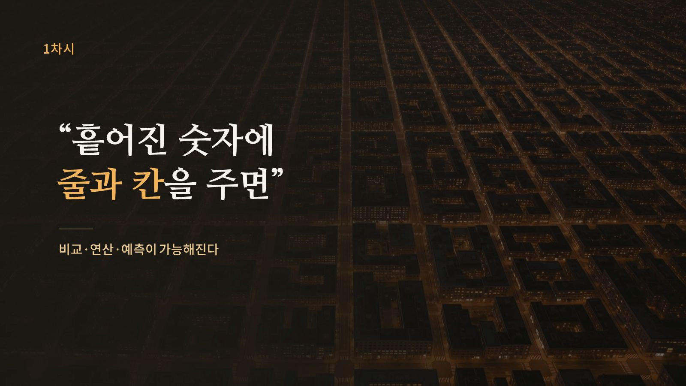
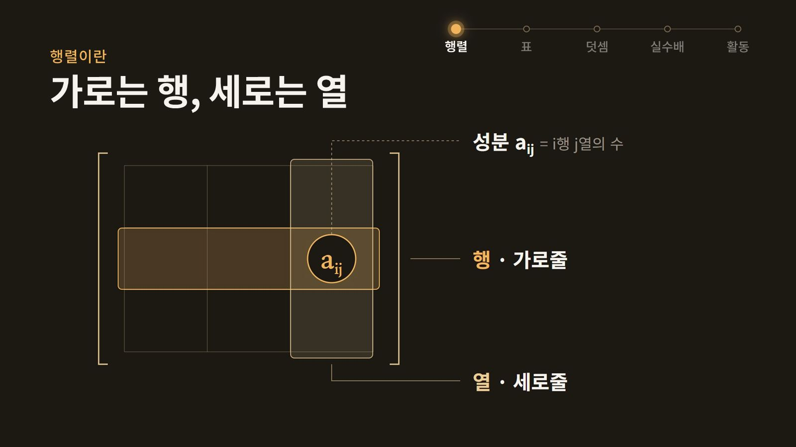
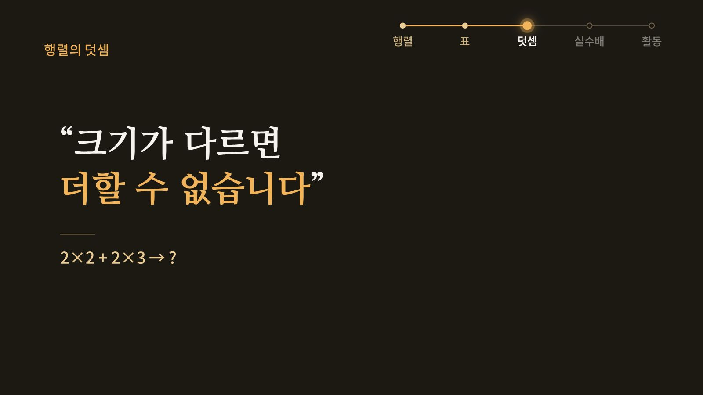
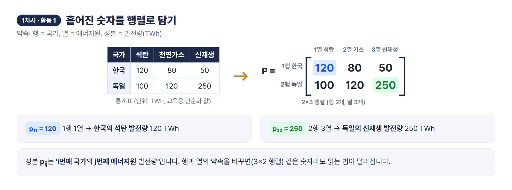
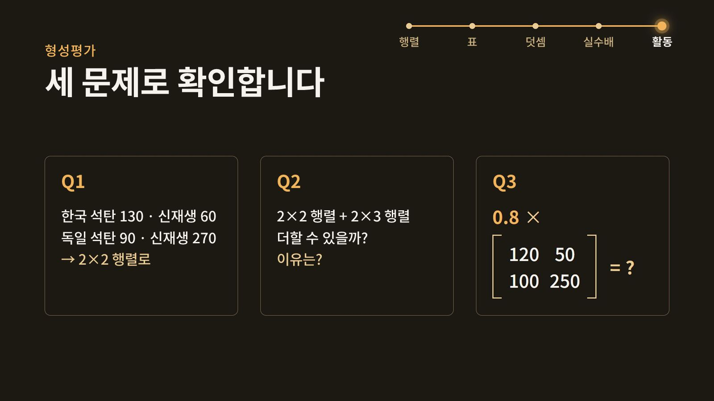
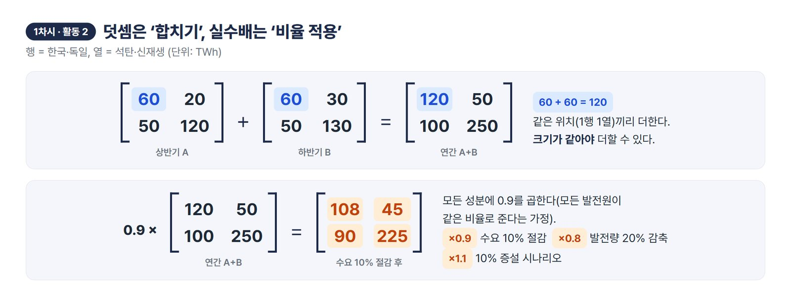

세상을 행렬로 담다
오늘의 목표실생활 에너지 데이터를 행렬로 나타내고, 행렬의 덧셈·실수배를 수행하여 그 사회적 의미를 설명할 수 있다.

수업 흐름
지도안은 45분 기준이에요. 50분 수업이면 남는 5분을 모둠 활동(활동지 ①)에 더해요. ← → 키로 단계를 넘기고, 발문·정답·유의점은 교사 모드에서 보여요.
이 수많은 숫자를
어떻게 한눈에 정리할 수 있을까?
영상을 보고, 칠판에 흩어진 발전량 숫자를 살펴봐요.

· 한 국가의 에너지원별 발전량을 칠판에 흩뜨려 적어 정리의 필요성을 느끼게 함
· 숫자의 ‘무질서’를 일부러 보여 주어 구조화의 필요를 끌어냄
· 시간: 지도안은 45분(도입 10 · 전개 30 · 정리 5) 기준. 50분 수업이면 남는 5분을 모둠 활동(활동지 ①)에 더함
탄소를 계산해야 하는 이유
배출권시장 정보플랫폼 · 오늘의 시세
· 시세 화면은 수업 시점에 실시간으로 조회
오늘의 목표
실생활 에너지 데이터를 행렬로 나타내고, 행렬의 덧셈·실수배를 수행하여 그 사회적 의미를 설명해요.

3×3 격자에서 a23은 어디에 있을까?
칸을 눌러 보세요.
- 행렬: 여러 수를 직사각형 모양으로 배열해 괄호로 묶은 것
- 행 = 가로줄, 열 = 세로줄
- 성분 aij = i행 j열의 수 (행이 먼저, 열이 나중)
- 행이 m개, 열이 n개 → m × n 행렬

· ‘i행 j열 → aij’ 표기를 반드시 쓰게 함
표를 행렬로 옮기면
약속: 행 = 국가, 열 = 에너지원, 성분 = 발전량(TWh)
| 석탄 | 천연가스 | 신재생 | |
|---|---|---|---|
| 한국 | 120 | 80 | 50 |
| 독일 | 100 | 120 | 250 |
- QP는 몇 × 몇 행렬인가요? p11과 p23은 무엇을 뜻하나요?
- Q행과 열을 서로 바꾸면 무엇이 달라질까요?
표의 값은 교육용 가상 수치예요(실제와 달라요). 3열로 단순하게 하려고 원자력은 뺐어요 — 실제 한국은 원자력이 가장 큰 발전원(2024년 31.7%)이고, 독일은 2023년 4월 원전을 모두 멈췄어요. 원자력 열을 더하면 P는 몇 × 몇 행렬이 될까요?
정답 보기
행·열을 바꾸면 3 × 2 행렬이 되고, 원래 p23 = 250은 새 행렬의 (3, 2) 성분이 돼요.
· 값은 교육용 가상 수치(원자력 등 생략). 실제 2024년 한국: 원자력 31.7% · 석탄 28.1% · LNG 28.1% · 신재생 10.6%(산업통상자원부 「2024년 에너지수급동향」, 잠정) / 독일: 공공 순발전량 중 재생 62.7%, 석탄 약 22%(갈탄 71.1·무연탄 24.2 TWh), 가스 약 11%(Fraunhofer ISE, 2025. 1.) — 가스 대소는 수업 값과 실제가 반대이니 Our World in Data에서 직접 비교하게 함
· 심화: “원자력 열을 추가하면 E와 PE는 어떻게 바뀔까?”(무탄소 전원)
· 단위(TWh)를 반드시 쓰게 함
믹스가 다르면 탄소도 다르다
값과 읽는 법
프랑스는 원자력 중심 → 저탄소, 독일은 신재생 비중이 가장 크고, 한국은 석탄·가스 등 화석 비중이 커요. 믹스의 차이가 탄소 배출의 차이로 이어져요.
같은 자리끼리 더한다
행 = 한국·독일, 열 = 석탄·신재생, 단위 TWh
1행 1열끼리: 60 + 60 = 120 → 연간 한국 석탄 발전량 120 TWh
2×2 행렬 + 2×3 행렬은 더할 수 있을까?

· 짝과 답을 비교하게 함
곱하는 수가 곧 정책
모든 발전원이 같은 비율로 변한다는 단순 가정이에요.
정답 보기
· 일부 성분에만 곱하는 오류 점검
데이터를 행렬로 담기 — 모둠 활동
- Q1발전량 행렬 만들기 — 2×3 데이터를 행렬 P로, 성분의 의미 쓰기
- Q2행렬의 덧셈 — 상반기 + 하반기 → 연간
- Q3실수배 — 수요 10% 절감(× 0.9) 후 계산·해석
- Q4생각 넓히기 — 행·열을 바꾸면? 모든 발전량 30% 감축은 몇을 곱할까?

정답 (교사용)
1-3 p11 = 120 → 한국의 석탄 발전량, p23 = 250 → 독일의 신재생 발전량, 독일 천연가스 = p22 = 120
1-4 행·열을 바꾸면 3×2 행렬, 원래 p23 = 250은 새 행렬의 (3, 2) 성분 · 한국 신재생 50 < 독일 신재생 250 → 독일의 화석 비중이 상대적으로 낮다
2-1 A + B = (120 50 / 100 250) → 연간 한국 석탄 120 TWh
2-3 0.9 × (A + B) = (108 45 / 90 225) → 한국 석탄 108 TWh
2-4 모든 발전량 30% 감축 → × 0.7 · 0.8 × 0.8 = 0.64 → 64% 남음
2-5 메뉴 10% 할인 → 단가 × 0.9, 수량 2배 → 수량 × 2
· 색상 스티커·태블릿(선택)
· 50분 수업이면 남는 5분을 이 모둠 활동에 더함
세 문제로 확인해요
- Q1한국 석탄 130·신재생 60 / 독일 석탄 90·신재생 270을 2×2 행렬로 나타내 보세요.
- Q22×2 행렬과 2×3 행렬을 더할 수 있을까요? 이유는?
- Q3(120 50 / 100 250)에 0.8을 곱하면?

정답 보기
활동지 ①
우리 모둠의 기록
적은 내용은 이 기기의 브라우저에만 저장돼요. 종이 활동지를 쓰는 반은 계산을 종이에 써도 돼요.
1발전량 데이터를 행렬로 나타내기
2덧셈과 실수배로 미래 예측하기

3계산 칸 — 행렬 P · 덧셈 · 실수배
이 차시 슬라이드
수업 PPT 1~29장(공통 도입 1~9장 포함). 슬라이드는 처음 만든 어두운 판 그대로예요.
나가기 질문
오늘 배운 덧셈·실수배가 쓰일 다른 에너지 상황을 하나 적어 보세요. (예: 여러 발전소의 월별 발전량 합치기)